Quadcopter Package Delivery, Parameter Sweeps
This example models a quadcopter that navigates a path to deliver a package. The body was designed in CAD and imported into Simscape Multibody. The electric motors capture the dynamics of the power conversion in an abstract manner to enable fast simulation. The package is released from the quadcopter when it reaches the final waypoint and the release criteria are met.
The design space for the quadcopter and the missions it performs is explored by conducting a set of parameter sweeps.
Contents
Model
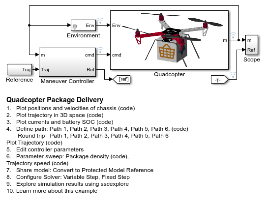
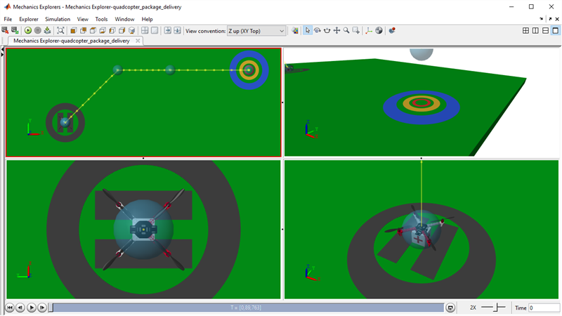
Parameter Sweep: Package Mass
Using parallel computing we vary the mass of the package to see its effect on the quadcopter trajectory.
Elapsed Simulation Time Single Run: 19.114 [25-Apr-2026 00:03:41] Checking for availability of parallel pool... Starting parallel pool (parpool) using the 'Processes' profile ... Connected to parallel pool with 4 workers. [25-Apr-2026 00:03:55] Starting Simulink on parallel workers... [25-Apr-2026 00:03:57] Configuring simulation cache folder on parallel workers... [25-Apr-2026 00:03:58] Transferring base workspace variables used in the model to parallel workers... [25-Apr-2026 00:03:58] Total size of base workspace variables to send to parallel workers is 72.94 MB. [25-Apr-2026 00:03:58] Loading model on parallel workers... [25-Apr-2026 00:04:04] Running simulations... [25-Apr-2026 00:04:50] Completed 1 of 12 simulation runs [25-Apr-2026 00:04:50] Received simulation output (size: 7.72 MB) for run 1 from parallel worker. [25-Apr-2026 00:04:51] Completed 2 of 12 simulation runs [25-Apr-2026 00:04:51] Received simulation output (size: 7.73 MB) for run 2 from parallel worker. [25-Apr-2026 00:04:52] Completed 3 of 12 simulation runs [25-Apr-2026 00:04:52] Received simulation output (size: 7.73 MB) for run 3 from parallel worker. [25-Apr-2026 00:04:59] Completed 4 of 12 simulation runs [25-Apr-2026 00:04:59] Received simulation output (size: 10.10 MB) for run 4 from parallel worker. [25-Apr-2026 00:05:02] Completed 5 of 12 simulation runs [25-Apr-2026 00:05:02] Received simulation output (size: 7.78 MB) for run 5 from parallel worker. [25-Apr-2026 00:05:04] Completed 6 of 12 simulation runs [25-Apr-2026 00:05:04] Received simulation output (size: 8.03 MB) for run 7 from parallel worker. [25-Apr-2026 00:05:05] Completed 7 of 12 simulation runs [25-Apr-2026 00:05:05] Received simulation output (size: 7.99 MB) for run 6 from parallel worker. [25-Apr-2026 00:05:11] Completed 8 of 12 simulation runs [25-Apr-2026 00:05:11] Received simulation output (size: 8.14 MB) for run 8 from parallel worker. [25-Apr-2026 00:05:14] Completed 9 of 12 simulation runs [25-Apr-2026 00:05:14] Received simulation output (size: 8.24 MB) for run 9 from parallel worker. [25-Apr-2026 00:05:16] Completed 10 of 12 simulation runs [25-Apr-2026 00:05:16] Received simulation output (size: 8.74 MB) for run 10 from parallel worker. [25-Apr-2026 00:05:16] Completed 11 of 12 simulation runs [25-Apr-2026 00:05:16] Received simulation output (size: 6.30 MB) for run 12 from parallel worker. [25-Apr-2026 00:05:20] Completed 12 of 12 simulation runs [25-Apr-2026 00:05:20] Received simulation output (size: 12.70 MB) for run 11 from parallel worker. [25-Apr-2026 00:05:20] Cleaning up parallel workers... Elapsed Sweep Time Total: 70.00 Elapsed Sweep Time/(Num Tests): 5.83 Parallel pool using the 'Processes' profile is shutting down.
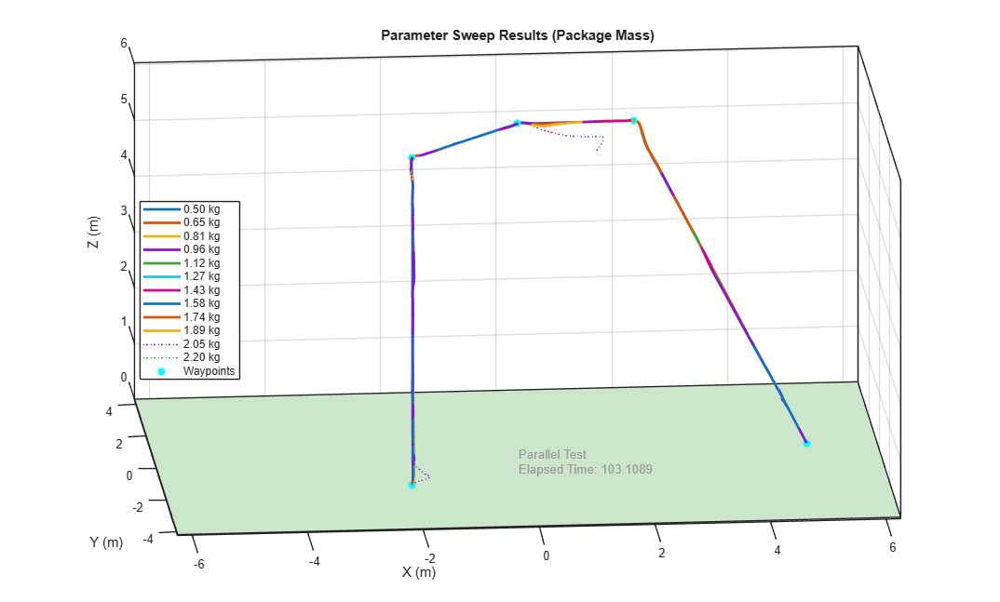
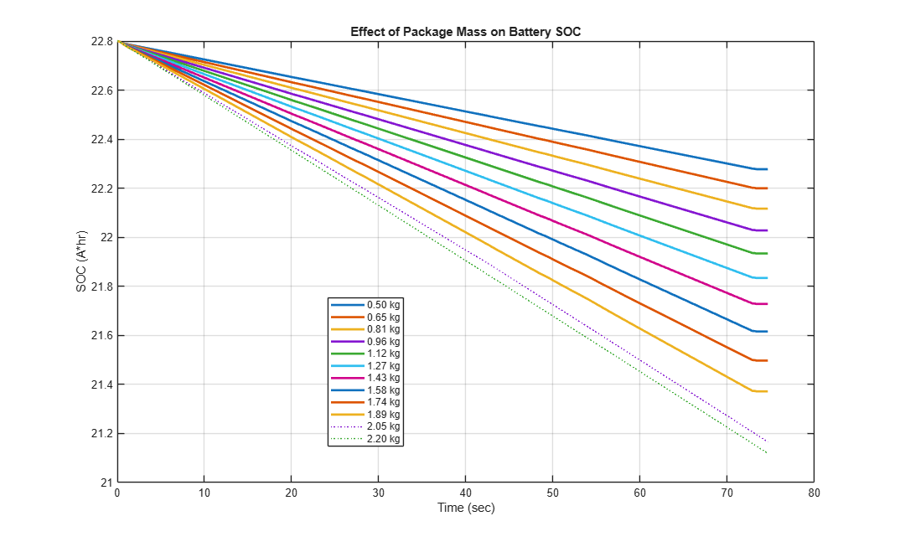
Parameter Sweep: Trajectory Speed
Using parallel computing we vary the target speed of the quadcopter and see if the quadcopter can follow the target path.
Elapsed Simulation Time Single Run: 29.9085 [25-Apr-2026 00:06:06] Checking for availability of parallel pool... Starting parallel pool (parpool) using the 'Processes' profile ... Connected to parallel pool with 4 workers. [25-Apr-2026 00:06:19] Starting Simulink on parallel workers... [25-Apr-2026 00:06:22] Configuring simulation cache folder on parallel workers... [25-Apr-2026 00:06:22] Transferring base workspace variables used in the model to parallel workers... [25-Apr-2026 00:06:22] Total size of base workspace variables to send to parallel workers is 107.97 MB. [25-Apr-2026 00:06:23] Loading model on parallel workers... [25-Apr-2026 00:06:29] Running simulations... [25-Apr-2026 00:07:19] Completed 1 of 8 simulation runs [25-Apr-2026 00:07:19] Received simulation output (size: 9.33 MB) for run 1 from parallel worker. [25-Apr-2026 00:07:20] Completed 2 of 8 simulation runs [25-Apr-2026 00:07:20] Received simulation output (size: 9.28 MB) for run 2 from parallel worker. [25-Apr-2026 00:07:21] Completed 3 of 8 simulation runs [25-Apr-2026 00:07:21] Received simulation output (size: 8.29 MB) for run 4 from parallel worker. [25-Apr-2026 00:07:21] Completed 4 of 8 simulation runs [25-Apr-2026 00:07:21] Received simulation output (size: 9.00 MB) for run 3 from parallel worker. [25-Apr-2026 00:07:32] Completed 5 of 8 simulation runs [25-Apr-2026 00:07:32] Received simulation output (size: 7.45 MB) for run 5 from parallel worker. [25-Apr-2026 00:07:34] Completed 6 of 8 simulation runs [25-Apr-2026 00:07:34] Received simulation output (size: 7.42 MB) for run 8 from parallel worker. [25-Apr-2026 00:07:34] Completed 7 of 8 simulation runs [25-Apr-2026 00:07:34] Received simulation output (size: 7.67 MB) for run 6 from parallel worker. [25-Apr-2026 00:07:35] Completed 8 of 8 simulation runs [25-Apr-2026 00:07:35] Received simulation output (size: 7.82 MB) for run 7 from parallel worker. [25-Apr-2026 00:07:35] Cleaning up parallel workers... Elapsed Sweep Time Total: 64.00 Elapsed Sweep Time/(Num Tests): 8.00 Parallel pool using the 'Processes' profile is shutting down.
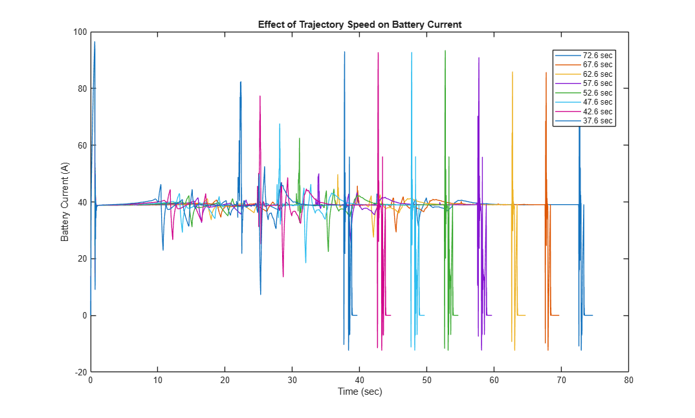
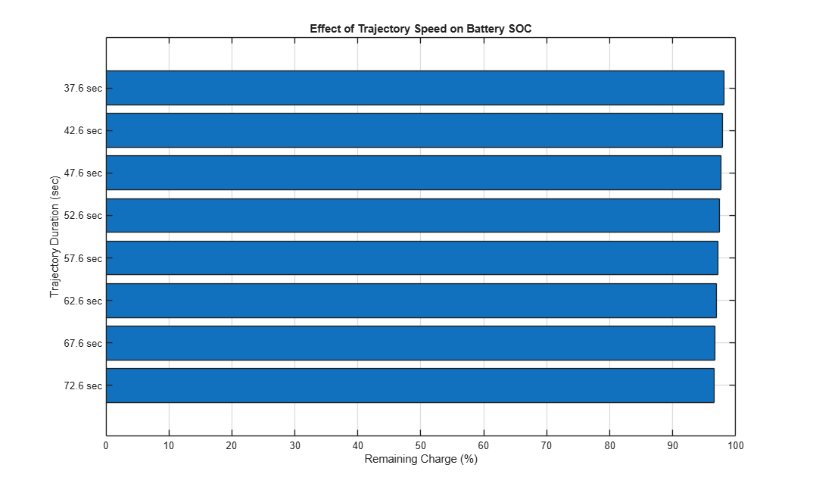
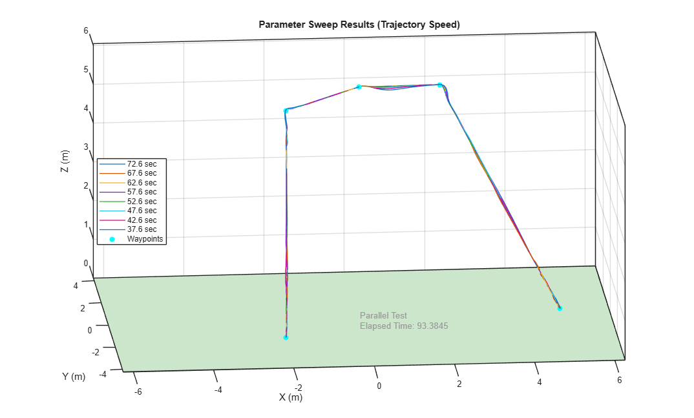
Parameter Sweep: Mass and Wind
Using parallel computing we vary the mass of the package and the strength of wind gusts that strike the quadcopter during the test.
Elapsed Simulation Time Single Run: 43.9356 [25-Apr-2026 00:08:37] Checking for availability of parallel pool... Starting parallel pool (parpool) using the 'Processes' profile ... Connected to parallel pool with 4 workers. [25-Apr-2026 00:08:50] Starting Simulink on parallel workers... [25-Apr-2026 00:08:53] Configuring simulation cache folder on parallel workers... [25-Apr-2026 00:08:53] Transferring base workspace variables used in the model to parallel workers... [25-Apr-2026 00:08:53] Total size of base workspace variables to send to parallel workers is 74.84 MB. [25-Apr-2026 00:08:54] Loading model on parallel workers... [25-Apr-2026 00:09:01] Running simulations... [25-Apr-2026 00:09:47] Completed 1 of 228 simulation runs [25-Apr-2026 00:09:47] Received simulation output (size: 9.87 MB) for run 1 from parallel worker. [25-Apr-2026 00:09:48] Completed 2 of 228 simulation runs [25-Apr-2026 00:09:48] Received simulation output (size: 10.35 MB) for run 3 from parallel worker. [25-Apr-2026 00:09:49] Completed 3 of 228 simulation runs [25-Apr-2026 00:09:49] Received simulation output (size: 9.95 MB) for run 2 from parallel worker. [25-Apr-2026 00:09:50] Completed 4 of 228 simulation runs [25-Apr-2026 00:09:50] Received simulation output (size: 11.33 MB) for run 4 from parallel worker. [25-Apr-2026 00:10:05] Completed 5 of 228 simulation runs [25-Apr-2026 00:10:05] Received simulation output (size: 12.78 MB) for run 5 from parallel worker. [25-Apr-2026 00:10:08] Completed 6 of 228 simulation runs [25-Apr-2026 00:10:08] Received simulation output (size: 15.10 MB) for run 6 from parallel worker. [25-Apr-2026 00:10:13] Completed 7 of 228 simulation runs [25-Apr-2026 00:10:13] Received simulation output (size: 17.35 MB) for run 7 from parallel worker. [25-Apr-2026 00:10:17] Completed 8 of 228 simulation runs [25-Apr-2026 00:10:17] Received simulation output (size: 18.88 MB) for run 8 from parallel worker. [25-Apr-2026 00:10:33] Completed 9 of 228 simulation runs [25-Apr-2026 00:10:33] Received simulation output (size: 21.16 MB) for run 9 from parallel worker. [25-Apr-2026 00:10:41] Completed 10 of 228 simulation runs [25-Apr-2026 00:10:41] Received simulation output (size: 22.69 MB) for run 11 from parallel worker. [25-Apr-2026 00:10:42] Completed 11 of 228 simulation runs [25-Apr-2026 00:10:42] Received simulation output (size: 24.67 MB) for run 10 from parallel worker. [25-Apr-2026 00:10:43] Completed 12 of 228 simulation runs [25-Apr-2026 00:10:43] Received simulation output (size: 21.11 MB) for run 12 from parallel worker. [25-Apr-2026 00:10:58] Completed 13 of 228 simulation runs [25-Apr-2026 00:10:58] Received simulation output (size: 21.80 MB) for run 13 from parallel worker. [25-Apr-2026 00:11:01] Completed 14 of 228 simulation runs [25-Apr-2026 00:11:01] Received simulation output (size: 16.01 MB) for run 16 from parallel worker. [25-Apr-2026 00:11:03] Completed 15 of 228 simulation runs [25-Apr-2026 00:11:04] Received simulation output (size: 19.35 MB) for run 15 from parallel worker. [25-Apr-2026 00:11:05] Completed 16 of 228 simulation runs [25-Apr-2026 00:11:05] Received simulation output (size: 20.85 MB) for run 14 from parallel worker. [25-Apr-2026 00:11:16] Completed 17 of 228 simulation runs [25-Apr-2026 00:11:16] Received simulation output (size: 14.98 MB) for run 17 from parallel worker. [25-Apr-2026 00:11:20] Completed 18 of 228 simulation runs [25-Apr-2026 00:11:20] Received simulation output (size: 13.85 MB) for run 19 from parallel worker. [25-Apr-2026 00:11:20] Completed 19 of 228 simulation runs [25-Apr-2026 00:11:20] Received simulation output (size: 9.88 MB) for run 20 from parallel worker. [25-Apr-2026 00:11:20] Completed 20 of 228 simulation runs [25-Apr-2026 00:11:20] Received simulation output (size: 15.75 MB) for run 18 from parallel worker. [25-Apr-2026 00:11:29] Completed 21 of 228 simulation runs [25-Apr-2026 00:11:29] Received simulation output (size: 9.89 MB) for run 21 from parallel worker. [25-Apr-2026 00:11:34] Completed 22 of 228 simulation runs [25-Apr-2026 00:11:34] Received simulation output (size: 10.44 MB) for run 22 from parallel worker. [25-Apr-2026 00:11:35] Completed 23 of 228 simulation runs [25-Apr-2026 00:11:35] Received simulation output (size: 11.19 MB) for run 23 from parallel worker. [25-Apr-2026 00:11:37] Completed 24 of 228 simulation runs [25-Apr-2026 00:11:37] Received simulation output (size: 12.54 MB) for run 24 from parallel worker. [25-Apr-2026 00:11:48] Completed 25 of 228 simulation runs [25-Apr-2026 00:11:48] Received simulation output (size: 14.11 MB) for run 25 from parallel worker. [25-Apr-2026 00:11:57] Completed 26 of 228 simulation runs [25-Apr-2026 00:11:57] Received simulation output (size: 16.85 MB) for run 26 from parallel worker. [25-Apr-2026 00:12:01] Completed 27 of 228 simulation runs [25-Apr-2026 00:12:01] Received simulation output (size: 19.07 MB) for run 27 from parallel worker. [25-Apr-2026 00:12:07] Completed 28 of 228 simulation runs [25-Apr-2026 00:12:07] Received simulation output (size: 20.59 MB) for run 28 from parallel worker. [25-Apr-2026 00:12:22] Completed 29 of 228 simulation runs [25-Apr-2026 00:12:22] Received simulation output (size: 23.44 MB) for run 29 from parallel worker. [25-Apr-2026 00:12:27] Completed 30 of 228 simulation runs [25-Apr-2026 00:12:27] Received simulation output (size: 20.52 MB) for run 31 from parallel worker. [25-Apr-2026 00:12:28] Completed 31 of 228 simulation runs [25-Apr-2026 00:12:28] Received simulation output (size: 22.35 MB) for run 30 from parallel worker. [25-Apr-2026 00:12:28] Completed 32 of 228 simulation runs [25-Apr-2026 00:12:28] Received simulation output (size: 17.38 MB) for run 32 from parallel worker. [25-Apr-2026 00:12:45] Completed 33 of 228 simulation runs [25-Apr-2026 00:12:45] Received simulation output (size: 18.62 MB) for run 33 from parallel worker. [25-Apr-2026 00:12:47] Completed 34 of 228 simulation runs [25-Apr-2026 00:12:47] Received simulation output (size: 15.89 MB) for run 36 from parallel worker. [25-Apr-2026 00:12:49] Completed 35 of 228 simulation runs [25-Apr-2026 00:12:49] Received simulation output (size: 19.06 MB) for run 34 from parallel worker. [25-Apr-2026 00:12:50] Completed 36 of 228 simulation runs [25-Apr-2026 00:12:50] Received simulation output (size: 19.12 MB) for run 35 from parallel worker. [25-Apr-2026 00:13:02] Completed 37 of 228 simulation runs [25-Apr-2026 00:13:02] Received simulation output (size: 13.76 MB) for run 38 from parallel worker. [25-Apr-2026 00:13:02] Completed 38 of 228 simulation runs [25-Apr-2026 00:13:02] Received simulation output (size: 9.80 MB) for run 39 from parallel worker. [25-Apr-2026 00:13:02] Completed 39 of 228 simulation runs [25-Apr-2026 00:13:02] Received simulation output (size: 15.19 MB) for run 37 from parallel worker. [25-Apr-2026 00:13:05] Completed 40 of 228 simulation runs [25-Apr-2026 00:13:05] Received simulation output (size: 9.92 MB) for run 40 from parallel worker. [25-Apr-2026 00:13:17] Completed 41 of 228 simulation runs [25-Apr-2026 00:13:17] Received simulation output (size: 10.35 MB) for run 41 from parallel worker. [25-Apr-2026 00:13:19] Completed 42 of 228 simulation runs [25-Apr-2026 00:13:19] Received simulation output (size: 11.37 MB) for run 42 from parallel worker. [25-Apr-2026 00:13:21] Completed 43 of 228 simulation runs [25-Apr-2026 00:13:21] Received simulation output (size: 12.52 MB) for run 43 from parallel worker. [25-Apr-2026 00:13:26] Completed 44 of 228 simulation runs [25-Apr-2026 00:13:26] Received simulation output (size: 14.11 MB) for run 44 from parallel worker. [25-Apr-2026 00:13:41] Completed 45 of 228 simulation runs [25-Apr-2026 00:13:41] Received simulation output (size: 16.24 MB) for run 45 from parallel worker. [25-Apr-2026 00:13:45] Completed 46 of 228 simulation runs [25-Apr-2026 00:13:45] Received simulation output (size: 18.51 MB) for run 46 from parallel worker. [25-Apr-2026 00:13:52] Completed 47 of 228 simulation runs [25-Apr-2026 00:13:52] Received simulation output (size: 21.09 MB) for run 47 from parallel worker. [25-Apr-2026 00:13:59] Completed 48 of 228 simulation runs [25-Apr-2026 00:13:59] Received simulation output (size: 22.24 MB) for run 48 from parallel worker. [25-Apr-2026 00:14:15] Completed 49 of 228 simulation runs [25-Apr-2026 00:14:15] Received simulation output (size: 20.84 MB) for run 50 from parallel worker. [25-Apr-2026 00:14:16] Completed 50 of 228 simulation runs [25-Apr-2026 00:14:16] Received simulation output (size: 18.31 MB) for run 51 from parallel worker. [25-Apr-2026 00:14:22] Completed 51 of 228 simulation runs [25-Apr-2026 00:14:22] Received simulation output (size: 26.34 MB) for run 49 from parallel worker. [25-Apr-2026 00:14:24] Completed 52 of 228 simulation runs [25-Apr-2026 00:14:24] Received simulation output (size: 19.06 MB) for run 52 from parallel worker. [25-Apr-2026 00:14:36] Completed 53 of 228 simulation runs [25-Apr-2026 00:14:36] Received simulation output (size: 17.75 MB) for run 53 from parallel worker. [25-Apr-2026 00:14:38] Completed 54 of 228 simulation runs [25-Apr-2026 00:14:38] Received simulation output (size: 18.41 MB) for run 54 from parallel worker. [25-Apr-2026 00:14:40] Completed 55 of 228 simulation runs [25-Apr-2026 00:14:40] Received simulation output (size: 14.91 MB) for run 56 from parallel worker. [25-Apr-2026 00:14:40] Completed 56 of 228 simulation runs [25-Apr-2026 00:14:40] Received simulation output (size: 16.01 MB) for run 55 from parallel worker. [25-Apr-2026 00:14:54] Completed 57 of 228 simulation runs [25-Apr-2026 00:14:54] Received simulation output (size: 15.60 MB) for run 57 from parallel worker. [25-Apr-2026 00:15:00] Completed 58 of 228 simulation runs [25-Apr-2026 00:15:00] Received simulation output (size: 12.96 MB) for run 58 from parallel worker. [25-Apr-2026 00:15:01] Completed 59 of 228 simulation runs [25-Apr-2026 00:15:01] Received simulation output (size: 12.15 MB) for run 60 from parallel worker. [25-Apr-2026 00:15:01] Completed 60 of 228 simulation runs [25-Apr-2026 00:15:01] Received simulation output (size: 12.52 MB) for run 59 from parallel worker. [25-Apr-2026 00:15:15] Completed 61 of 228 simulation runs [25-Apr-2026 00:15:15] Received simulation output (size: 12.85 MB) for run 61 from parallel worker. [25-Apr-2026 00:15:24] Completed 62 of 228 simulation runs [25-Apr-2026 00:15:24] Received simulation output (size: 14.28 MB) for run 62 from parallel worker. [25-Apr-2026 00:15:27] Completed 63 of 228 simulation runs [25-Apr-2026 00:15:27] Received simulation output (size: 15.45 MB) for run 63 from parallel worker. [25-Apr-2026 00:15:28] Completed 64 of 228 simulation runs [25-Apr-2026 00:15:28] Received simulation output (size: 16.45 MB) for run 64 from parallel worker. [25-Apr-2026 00:15:47] Completed 65 of 228 simulation runs [25-Apr-2026 00:15:47] Received simulation output (size: 20.35 MB) for run 65 from parallel worker. [25-Apr-2026 00:16:00] Completed 66 of 228 simulation runs [25-Apr-2026 00:16:00] Received simulation output (size: 22.13 MB) for run 66 from parallel worker. [25-Apr-2026 00:16:03] Completed 67 of 228 simulation runs [25-Apr-2026 00:16:04] Received simulation output (size: 22.95 MB) for run 67 from parallel worker. [25-Apr-2026 00:16:07] Completed 68 of 228 simulation runs [25-Apr-2026 00:16:07] Received simulation output (size: 25.64 MB) for run 68 from parallel worker. [25-Apr-2026 00:16:25] Completed 69 of 228 simulation runs [25-Apr-2026 00:16:25] Received simulation output (size: 26.82 MB) for run 69 from parallel worker. [25-Apr-2026 00:16:28] Completed 70 of 228 simulation runs [25-Apr-2026 00:16:28] Received simulation output (size: 18.28 MB) for run 71 from parallel worker. [25-Apr-2026 00:16:28] Completed 71 of 228 simulation runs [25-Apr-2026 00:16:28] Received simulation output (size: 21.24 MB) for run 70 from parallel worker. [25-Apr-2026 00:16:30] Completed 72 of 228 simulation runs [25-Apr-2026 00:16:30] Received simulation output (size: 17.84 MB) for run 72 from parallel worker. [25-Apr-2026 00:16:45] Completed 73 of 228 simulation runs [25-Apr-2026 00:16:45] Received simulation output (size: 14.37 MB) for run 75 from parallel worker. [25-Apr-2026 00:16:47] Completed 74 of 228 simulation runs [25-Apr-2026 00:16:47] Received simulation output (size: 14.83 MB) for run 76 from parallel worker. [25-Apr-2026 00:16:48] Completed 75 of 228 simulation runs [25-Apr-2026 00:16:48] Received simulation output (size: 17.34 MB) for run 74 from parallel worker. [25-Apr-2026 00:16:50] Completed 76 of 228 simulation runs [25-Apr-2026 00:16:50] Received simulation output (size: 19.28 MB) for run 73 from parallel worker. [25-Apr-2026 00:17:00] Completed 77 of 228 simulation runs [25-Apr-2026 00:17:00] Received simulation output (size: 9.82 MB) for run 77 from parallel worker. [25-Apr-2026 00:17:04] Completed 78 of 228 simulation runs [25-Apr-2026 00:17:04] Received simulation output (size: 9.89 MB) for run 78 from parallel worker. [25-Apr-2026 00:17:06] Completed 79 of 228 simulation runs [25-Apr-2026 00:17:06] Received simulation output (size: 10.35 MB) for run 79 from parallel worker. [25-Apr-2026 00:17:08] Completed 80 of 228 simulation runs [25-Apr-2026 00:17:08] Received simulation output (size: 11.26 MB) for run 80 from parallel worker. [25-Apr-2026 00:17:19] Completed 81 of 228 simulation runs [25-Apr-2026 00:17:19] Received simulation output (size: 12.31 MB) for run 81 from parallel worker. [25-Apr-2026 00:17:25] Completed 82 of 228 simulation runs [25-Apr-2026 00:17:25] Received simulation output (size: 13.75 MB) for run 82 from parallel worker. [25-Apr-2026 00:17:30] Completed 83 of 228 simulation runs [25-Apr-2026 00:17:30] Received simulation output (size: 16.18 MB) for run 83 from parallel worker. [25-Apr-2026 00:17:36] Completed 84 of 228 simulation runs [25-Apr-2026 00:17:36] Received simulation output (size: 18.65 MB) for run 84 from parallel worker. [25-Apr-2026 00:17:52] Completed 85 of 228 simulation runs [25-Apr-2026 00:17:52] Received simulation output (size: 20.97 MB) for run 85 from parallel worker. [25-Apr-2026 00:18:00] Completed 86 of 228 simulation runs [25-Apr-2026 00:18:00] Received simulation output (size: 22.03 MB) for run 86 from parallel worker. [25-Apr-2026 00:18:09] Completed 87 of 228 simulation runs [25-Apr-2026 00:18:09] Received simulation output (size: 23.89 MB) for run 87 from parallel worker. [25-Apr-2026 00:18:19] Completed 88 of 228 simulation runs [25-Apr-2026 00:18:19] Received simulation output (size: 27.19 MB) for run 88 from parallel worker. [25-Apr-2026 00:18:24] Completed 89 of 228 simulation runs [25-Apr-2026 00:18:24] Received simulation output (size: 22.91 MB) for run 89 from parallel worker. [25-Apr-2026 00:18:24] Completed 90 of 228 simulation runs [25-Apr-2026 00:18:24] Received simulation output (size: 18.10 MB) for run 90 from parallel worker. [25-Apr-2026 00:18:34] Completed 91 of 228 simulation runs [25-Apr-2026 00:18:34] Received simulation output (size: 18.10 MB) for run 91 from parallel worker. [25-Apr-2026 00:18:45] Completed 92 of 228 simulation runs [25-Apr-2026 00:18:45] Received simulation output (size: 17.46 MB) for run 94 from parallel worker. [25-Apr-2026 00:18:46] Completed 93 of 228 simulation runs [25-Apr-2026 00:18:46] Received simulation output (size: 20.04 MB) for run 92 from parallel worker. [25-Apr-2026 00:18:49] Completed 94 of 228 simulation runs [25-Apr-2026 00:18:49] Received simulation output (size: 19.21 MB) for run 93 from parallel worker. [25-Apr-2026 00:18:51] Completed 95 of 228 simulation runs [25-Apr-2026 00:18:51] Received simulation output (size: 14.47 MB) for run 95 from parallel worker. [25-Apr-2026 00:19:02] Completed 96 of 228 simulation runs [25-Apr-2026 00:19:02] Received simulation output (size: 9.88 MB) for run 96 from parallel worker. [25-Apr-2026 00:19:04] Completed 97 of 228 simulation runs [25-Apr-2026 00:19:04] Received simulation output (size: 9.89 MB) for run 97 from parallel worker. [25-Apr-2026 00:19:05] Completed 98 of 228 simulation runs [25-Apr-2026 00:19:05] Received simulation output (size: 10.35 MB) for run 98 from parallel worker. [25-Apr-2026 00:19:08] Completed 99 of 228 simulation runs [25-Apr-2026 00:19:08] Received simulation output (size: 11.38 MB) for run 99 from parallel worker. [25-Apr-2026 00:19:21] Completed 100 of 228 simulation runs [25-Apr-2026 00:19:21] Received simulation output (size: 12.41 MB) for run 100 from parallel worker. [25-Apr-2026 00:19:24] Completed 101 of 228 simulation runs [25-Apr-2026 00:19:24] Received simulation output (size: 13.40 MB) for run 101 from parallel worker. [25-Apr-2026 00:19:30] Completed 102 of 228 simulation runs [25-Apr-2026 00:19:30] Received simulation output (size: 15.52 MB) for run 102 from parallel worker. [25-Apr-2026 00:19:37] Completed 103 of 228 simulation runs [25-Apr-2026 00:19:37] Received simulation output (size: 17.99 MB) for run 103 from parallel worker. [25-Apr-2026 00:19:52] Completed 104 of 228 simulation runs [25-Apr-2026 00:19:52] Received simulation output (size: 20.63 MB) for run 104 from parallel worker. [25-Apr-2026 00:20:00] Completed 105 of 228 simulation runs [25-Apr-2026 00:20:01] Received simulation output (size: 22.39 MB) for run 105 from parallel worker. [25-Apr-2026 00:20:10] Completed 106 of 228 simulation runs [25-Apr-2026 00:20:10] Received simulation output (size: 24.54 MB) for run 106 from parallel worker. [25-Apr-2026 00:20:23] Completed 107 of 228 simulation runs [25-Apr-2026 00:20:23] Received simulation output (size: 26.64 MB) for run 107 from parallel worker. [25-Apr-2026 00:20:30] Completed 108 of 228 simulation runs [25-Apr-2026 00:20:30] Received simulation output (size: 20.29 MB) for run 109 from parallel worker. [25-Apr-2026 00:20:33] Completed 109 of 228 simulation runs [25-Apr-2026 00:20:33] Received simulation output (size: 17.57 MB) for run 110 from parallel worker. [25-Apr-2026 00:20:46] Completed 110 of 228 simulation runs [25-Apr-2026 00:20:46] Received simulation output (size: 33.49 MB) for run 108 from parallel worker. [25-Apr-2026 00:20:48] Completed 111 of 228 simulation runs [25-Apr-2026 00:20:48] Received simulation output (size: 18.83 MB) for run 111 from parallel worker. [25-Apr-2026 00:20:53] Completed 112 of 228 simulation runs [25-Apr-2026 00:20:53] Received simulation output (size: 17.85 MB) for run 112 from parallel worker. [25-Apr-2026 00:20:55] Completed 113 of 228 simulation runs [25-Apr-2026 00:20:55] Received simulation output (size: 16.07 MB) for run 113 from parallel worker. [25-Apr-2026 00:21:03] Completed 114 of 228 simulation runs [25-Apr-2026 00:21:03] Received simulation output (size: 14.84 MB) for run 114 from parallel worker. [25-Apr-2026 00:21:04] Completed 115 of 228 simulation runs [25-Apr-2026 00:21:04] Received simulation output (size: 9.83 MB) for run 115 from parallel worker. [25-Apr-2026 00:21:09] Completed 116 of 228 simulation runs [25-Apr-2026 00:21:09] Received simulation output (size: 10.02 MB) for run 116 from parallel worker. [25-Apr-2026 00:21:10] Completed 117 of 228 simulation runs [25-Apr-2026 00:21:10] Received simulation output (size: 10.24 MB) for run 117 from parallel worker. [25-Apr-2026 00:21:20] Completed 118 of 228 simulation runs [25-Apr-2026 00:21:20] Received simulation output (size: 11.12 MB) for run 118 from parallel worker. [25-Apr-2026 00:21:22] Completed 119 of 228 simulation runs [25-Apr-2026 00:21:22] Received simulation output (size: 12.21 MB) for run 119 from parallel worker. [25-Apr-2026 00:21:28] Completed 120 of 228 simulation runs [25-Apr-2026 00:21:28] Received simulation output (size: 13.32 MB) for run 120 from parallel worker. [25-Apr-2026 00:21:32] Completed 121 of 228 simulation runs [25-Apr-2026 00:21:32] Received simulation output (size: 15.10 MB) for run 121 from parallel worker. [25-Apr-2026 00:21:46] Completed 122 of 228 simulation runs [25-Apr-2026 00:21:46] Received simulation output (size: 17.29 MB) for run 122 from parallel worker. [25-Apr-2026 00:21:52] Completed 123 of 228 simulation runs [25-Apr-2026 00:21:52] Received simulation output (size: 20.00 MB) for run 123 from parallel worker. [25-Apr-2026 00:22:03] Completed 124 of 228 simulation runs [25-Apr-2026 00:22:03] Received simulation output (size: 22.06 MB) for run 124 from parallel worker. [25-Apr-2026 00:22:12] Completed 125 of 228 simulation runs [25-Apr-2026 00:22:12] Received simulation output (size: 24.05 MB) for run 125 from parallel worker. [25-Apr-2026 00:22:31] Completed 126 of 228 simulation runs [25-Apr-2026 00:22:31] Received simulation output (size: 26.61 MB) for run 126 from parallel worker. [25-Apr-2026 00:22:32] Completed 127 of 228 simulation runs [25-Apr-2026 00:22:32] Received simulation output (size: 20.74 MB) for run 128 from parallel worker. [25-Apr-2026 00:22:37] Completed 128 of 228 simulation runs [25-Apr-2026 00:22:37] Received simulation output (size: 18.89 MB) for run 129 from parallel worker. [25-Apr-2026 00:22:42] Completed 129 of 228 simulation runs [25-Apr-2026 00:22:42] Received simulation output (size: 29.38 MB) for run 127 from parallel worker. [25-Apr-2026 00:22:53] Completed 130 of 228 simulation runs [25-Apr-2026 00:22:53] Received simulation output (size: 16.52 MB) for run 130 from parallel worker. [25-Apr-2026 00:22:53] Completed 131 of 228 simulation runs [25-Apr-2026 00:22:53] Received simulation output (size: 16.42 MB) for run 131 from parallel worker. [25-Apr-2026 00:22:59] Completed 132 of 228 simulation runs [25-Apr-2026 00:22:59] Received simulation output (size: 18.00 MB) for run 132 from parallel worker. [25-Apr-2026 00:23:01] Completed 133 of 228 simulation runs [25-Apr-2026 00:23:01] Received simulation output (size: 15.39 MB) for run 133 from parallel worker. [25-Apr-2026 00:23:06] Completed 134 of 228 simulation runs [25-Apr-2026 00:23:06] Received simulation output (size: 9.91 MB) for run 134 from parallel worker. [25-Apr-2026 00:23:07] Completed 135 of 228 simulation runs [25-Apr-2026 00:23:07] Received simulation output (size: 9.98 MB) for run 135 from parallel worker. [25-Apr-2026 00:23:13] Completed 136 of 228 simulation runs [25-Apr-2026 00:23:13] Received simulation output (size: 10.39 MB) for run 136 from parallel worker. [25-Apr-2026 00:23:16] Completed 137 of 228 simulation runs [25-Apr-2026 00:23:16] Received simulation output (size: 11.22 MB) for run 137 from parallel worker. [25-Apr-2026 00:23:24] Completed 138 of 228 simulation runs [25-Apr-2026 00:23:24] Received simulation output (size: 12.07 MB) for run 138 from parallel worker. [25-Apr-2026 00:23:26] Completed 139 of 228 simulation runs [25-Apr-2026 00:23:26] Received simulation output (size: 13.22 MB) for run 139 from parallel worker. [25-Apr-2026 00:23:36] Completed 140 of 228 simulation runs [25-Apr-2026 00:23:36] Received simulation output (size: 15.13 MB) for run 140 from parallel worker. [25-Apr-2026 00:23:44] Completed 141 of 228 simulation runs [25-Apr-2026 00:23:44] Received simulation output (size: 18.06 MB) for run 141 from parallel worker. [25-Apr-2026 00:23:54] Completed 142 of 228 simulation runs [25-Apr-2026 00:23:54] Received simulation output (size: 19.78 MB) for run 142 from parallel worker. [25-Apr-2026 00:24:02] Completed 143 of 228 simulation runs [25-Apr-2026 00:24:02] Received simulation output (size: 22.24 MB) for run 143 from parallel worker. [25-Apr-2026 00:24:15] Completed 144 of 228 simulation runs [25-Apr-2026 00:24:15] Received simulation output (size: 24.39 MB) for run 144 from parallel worker. [25-Apr-2026 00:24:28] Completed 145 of 228 simulation runs [25-Apr-2026 00:24:28] Received simulation output (size: 26.00 MB) for run 145 from parallel worker. [25-Apr-2026 00:24:30] Completed 146 of 228 simulation runs [25-Apr-2026 00:24:30] Received simulation output (size: 19.14 MB) for run 147 from parallel worker. [25-Apr-2026 00:24:36] Completed 147 of 228 simulation runs [25-Apr-2026 00:24:36] Received simulation output (size: 16.52 MB) for run 148 from parallel worker. [25-Apr-2026 00:24:43] Completed 148 of 228 simulation runs [25-Apr-2026 00:24:43] Received simulation output (size: 29.33 MB) for run 146 from parallel worker. [25-Apr-2026 00:24:47] Completed 149 of 228 simulation runs [25-Apr-2026 00:24:47] Received simulation output (size: 14.77 MB) for run 149 from parallel worker. [25-Apr-2026 00:24:50] Completed 150 of 228 simulation runs [25-Apr-2026 00:24:50] Received simulation output (size: 15.79 MB) for run 150 from parallel worker. [25-Apr-2026 00:24:54] Completed 151 of 228 simulation runs [25-Apr-2026 00:24:54] Received simulation output (size: 14.62 MB) for run 151 from parallel worker. [25-Apr-2026 00:25:00] Completed 152 of 228 simulation runs [25-Apr-2026 00:25:00] Received simulation output (size: 14.38 MB) for run 152 from parallel worker. [25-Apr-2026 00:25:01] Completed 153 of 228 simulation runs [25-Apr-2026 00:25:01] Received simulation output (size: 9.88 MB) for run 153 from parallel worker. [25-Apr-2026 00:25:05] Completed 154 of 228 simulation runs [25-Apr-2026 00:25:05] Received simulation output (size: 10.00 MB) for run 154 from parallel worker. [25-Apr-2026 00:25:10] Completed 155 of 228 simulation runs [25-Apr-2026 00:25:10] Received simulation output (size: 10.62 MB) for run 155 from parallel worker. [25-Apr-2026 00:25:16] Completed 156 of 228 simulation runs [25-Apr-2026 00:25:16] Received simulation output (size: 11.04 MB) for run 156 from parallel worker. [25-Apr-2026 00:25:19] Completed 157 of 228 simulation runs [25-Apr-2026 00:25:19] Received simulation output (size: 12.16 MB) for run 157 from parallel worker. [25-Apr-2026 00:25:24] Completed 158 of 228 simulation runs [25-Apr-2026 00:25:24] Received simulation output (size: 13.26 MB) for run 158 from parallel worker. [25-Apr-2026 00:25:34] Completed 159 of 228 simulation runs [25-Apr-2026 00:25:34] Received simulation output (size: 15.55 MB) for run 159 from parallel worker. [25-Apr-2026 00:25:43] Completed 160 of 228 simulation runs [25-Apr-2026 00:25:43] Received simulation output (size: 17.56 MB) for run 160 from parallel worker. [25-Apr-2026 00:25:51] Completed 161 of 228 simulation runs [25-Apr-2026 00:25:51] Received simulation output (size: 20.17 MB) for run 161 from parallel worker. [25-Apr-2026 00:26:01] Completed 162 of 228 simulation runs [25-Apr-2026 00:26:01] Received simulation output (size: 22.73 MB) for run 162 from parallel worker. [25-Apr-2026 00:26:15] Completed 163 of 228 simulation runs [25-Apr-2026 00:26:15] Received simulation output (size: 24.85 MB) for run 163 from parallel worker. [25-Apr-2026 00:26:19] Completed 164 of 228 simulation runs [25-Apr-2026 00:26:19] Received simulation output (size: 14.52 MB) for run 166 from parallel worker. [25-Apr-2026 00:26:19] Completed 165 of 228 simulation runs [25-Apr-2026 00:26:19] Received simulation output (size: 20.65 MB) for run 165 from parallel worker. [25-Apr-2026 00:26:31] Completed 166 of 228 simulation runs [25-Apr-2026 00:26:31] Received simulation output (size: 28.64 MB) for run 164 from parallel worker. [25-Apr-2026 00:26:32] Completed 167 of 228 simulation runs [25-Apr-2026 00:26:32] Received simulation output (size: 15.02 MB) for run 167 from parallel worker. [25-Apr-2026 00:26:36] Completed 168 of 228 simulation runs [25-Apr-2026 00:26:36] Received simulation output (size: 13.96 MB) for run 169 from parallel worker. [25-Apr-2026 00:26:38] Completed 169 of 228 simulation runs [25-Apr-2026 00:26:38] Received simulation output (size: 15.77 MB) for run 168 from parallel worker. [25-Apr-2026 00:26:46] Completed 170 of 228 simulation runs [25-Apr-2026 00:26:46] Received simulation output (size: 13.52 MB) for run 170 from parallel worker. [25-Apr-2026 00:26:49] Completed 171 of 228 simulation runs [25-Apr-2026 00:26:49] Received simulation output (size: 10.07 MB) for run 172 from parallel worker. [25-Apr-2026 00:26:49] Completed 172 of 228 simulation runs [25-Apr-2026 00:26:49] Received simulation output (size: 14.46 MB) for run 171 from parallel worker. [25-Apr-2026 00:26:53] Completed 173 of 228 simulation runs [25-Apr-2026 00:26:53] Received simulation output (size: 10.23 MB) for run 173 from parallel worker. [25-Apr-2026 00:27:02] Completed 174 of 228 simulation runs [25-Apr-2026 00:27:03] Received simulation output (size: 10.73 MB) for run 174 from parallel worker. [25-Apr-2026 00:27:06] Completed 175 of 228 simulation runs [25-Apr-2026 00:27:06] Received simulation output (size: 11.26 MB) for run 175 from parallel worker. [25-Apr-2026 00:27:08] Completed 176 of 228 simulation runs [25-Apr-2026 00:27:08] Received simulation output (size: 12.13 MB) for run 176 from parallel worker. [25-Apr-2026 00:27:14] Completed 177 of 228 simulation runs [25-Apr-2026 00:27:14] Received simulation output (size: 13.83 MB) for run 177 from parallel worker. [25-Apr-2026 00:27:27] Completed 178 of 228 simulation runs [25-Apr-2026 00:27:27] Received simulation output (size: 16.28 MB) for run 178 from parallel worker. [25-Apr-2026 00:27:37] Completed 179 of 228 simulation runs [25-Apr-2026 00:27:37] Received simulation output (size: 19.64 MB) for run 179 from parallel worker. [25-Apr-2026 00:27:41] Completed 180 of 228 simulation runs [25-Apr-2026 00:27:41] Received simulation output (size: 21.67 MB) for run 180 from parallel worker. [25-Apr-2026 00:27:51] Completed 181 of 228 simulation runs [25-Apr-2026 00:27:51] Received simulation output (size: 23.86 MB) for run 181 from parallel worker. [25-Apr-2026 00:27:56] Completed 182 of 228 simulation runs [25-Apr-2026 00:27:56] Received simulation output (size: 14.93 MB) for run 183 from parallel worker. [25-Apr-2026 00:28:01] Completed 183 of 228 simulation runs [25-Apr-2026 00:28:01] Received simulation output (size: 15.09 MB) for run 184 from parallel worker. [25-Apr-2026 00:28:10] Completed 184 of 228 simulation runs [25-Apr-2026 00:28:11] Received simulation output (size: 15.54 MB) for run 185 from parallel worker. [25-Apr-2026 00:28:14] Completed 185 of 228 simulation runs [25-Apr-2026 00:28:14] Received simulation output (size: 14.09 MB) for run 186 from parallel worker. [25-Apr-2026 00:28:17] Completed 186 of 228 simulation runs [25-Apr-2026 00:28:17] Received simulation output (size: 30.25 MB) for run 182 from parallel worker. [25-Apr-2026 00:28:18] Completed 187 of 228 simulation runs [25-Apr-2026 00:28:18] Received simulation output (size: 14.15 MB) for run 187 from parallel worker. [25-Apr-2026 00:28:27] Completed 188 of 228 simulation runs [25-Apr-2026 00:28:27] Received simulation output (size: 14.00 MB) for run 188 from parallel worker. [25-Apr-2026 00:28:27] Completed 189 of 228 simulation runs [25-Apr-2026 00:28:27] Received simulation output (size: 12.30 MB) for run 189 from parallel worker. [25-Apr-2026 00:28:30] Completed 190 of 228 simulation runs [25-Apr-2026 00:28:30] Received simulation output (size: 12.02 MB) for run 190 from parallel worker. [25-Apr-2026 00:28:36] Completed 191 of 228 simulation runs [25-Apr-2026 00:28:36] Received simulation output (size: 13.03 MB) for run 191 from parallel worker. [25-Apr-2026 00:28:46] Completed 192 of 228 simulation runs [25-Apr-2026 00:28:46] Received simulation output (size: 13.35 MB) for run 192 from parallel worker. [25-Apr-2026 00:28:47] Completed 193 of 228 simulation runs [25-Apr-2026 00:28:47] Received simulation output (size: 14.30 MB) for run 193 from parallel worker. [25-Apr-2026 00:28:51] Completed 194 of 228 simulation runs [25-Apr-2026 00:28:51] Received simulation output (size: 13.73 MB) for run 194 from parallel worker. [25-Apr-2026 00:29:07] Completed 195 of 228 simulation runs [25-Apr-2026 00:29:07] Received simulation output (size: 19.10 MB) for run 195 from parallel worker. [25-Apr-2026 00:29:20] Completed 196 of 228 simulation runs [25-Apr-2026 00:29:20] Received simulation output (size: 20.82 MB) for run 196 from parallel worker. [25-Apr-2026 00:29:29] Completed 197 of 228 simulation runs [25-Apr-2026 00:29:29] Received simulation output (size: 24.46 MB) for run 197 from parallel worker. [25-Apr-2026 00:29:30] Completed 198 of 228 simulation runs [25-Apr-2026 00:29:30] Received simulation output (size: 17.43 MB) for run 199 from parallel worker. [25-Apr-2026 00:29:41] Completed 199 of 228 simulation runs [25-Apr-2026 00:29:41] Received simulation output (size: 16.56 MB) for run 200 from parallel worker. [25-Apr-2026 00:29:43] Completed 200 of 228 simulation runs [25-Apr-2026 00:29:43] Received simulation output (size: 31.35 MB) for run 198 from parallel worker. [25-Apr-2026 00:29:47] Completed 201 of 228 simulation runs [25-Apr-2026 00:29:47] Received simulation output (size: 14.99 MB) for run 201 from parallel worker. [25-Apr-2026 00:29:49] Completed 202 of 228 simulation runs [25-Apr-2026 00:29:49] Received simulation output (size: 15.96 MB) for run 202 from parallel worker. [25-Apr-2026 00:29:59] Completed 203 of 228 simulation runs [25-Apr-2026 00:29:59] Received simulation output (size: 13.51 MB) for run 204 from parallel worker. [25-Apr-2026 00:30:01] Completed 204 of 228 simulation runs [25-Apr-2026 00:30:01] Received simulation output (size: 16.12 MB) for run 203 from parallel worker. [25-Apr-2026 00:30:04] Completed 205 of 228 simulation runs [25-Apr-2026 00:30:04] Received simulation output (size: 13.82 MB) for run 205 from parallel worker. [25-Apr-2026 00:30:06] Completed 206 of 228 simulation runs [25-Apr-2026 00:30:06] Received simulation output (size: 14.37 MB) for run 206 from parallel worker. [25-Apr-2026 00:30:15] Completed 207 of 228 simulation runs [25-Apr-2026 00:30:15] Received simulation output (size: 9.26 MB) for run 210 from parallel worker. [25-Apr-2026 00:30:15] Completed 208 of 228 simulation runs [25-Apr-2026 00:30:16] Received simulation output (size: 14.00 MB) for run 207 from parallel worker. [25-Apr-2026 00:30:18] Completed 209 of 228 simulation runs [25-Apr-2026 00:30:18] Received simulation output (size: 13.82 MB) for run 208 from parallel worker. [25-Apr-2026 00:30:20] Completed 210 of 228 simulation runs [25-Apr-2026 00:30:20] Received simulation output (size: 14.40 MB) for run 209 from parallel worker. [25-Apr-2026 00:30:22] Completed 211 of 228 simulation runs [25-Apr-2026 00:30:23] Received simulation output (size: 9.23 MB) for run 211 from parallel worker. [25-Apr-2026 00:30:23] Completed 212 of 228 simulation runs [25-Apr-2026 00:30:23] Received simulation output (size: 9.23 MB) for run 212 from parallel worker. [25-Apr-2026 00:30:26] Completed 213 of 228 simulation runs [25-Apr-2026 00:30:26] Received simulation output (size: 9.23 MB) for run 213 from parallel worker. [25-Apr-2026 00:30:29] Completed 214 of 228 simulation runs [25-Apr-2026 00:30:29] Received simulation output (size: 9.23 MB) for run 214 from parallel worker. [25-Apr-2026 00:30:31] Completed 215 of 228 simulation runs [25-Apr-2026 00:30:31] Received simulation output (size: 9.23 MB) for run 215 from parallel worker. [25-Apr-2026 00:30:32] Completed 216 of 228 simulation runs [25-Apr-2026 00:30:32] Received simulation output (size: 9.23 MB) for run 216 from parallel worker. [25-Apr-2026 00:30:34] Completed 217 of 228 simulation runs [25-Apr-2026 00:30:34] Received simulation output (size: 9.23 MB) for run 217 from parallel worker. [25-Apr-2026 00:30:37] Completed 218 of 228 simulation runs [25-Apr-2026 00:30:37] Received simulation output (size: 9.23 MB) for run 218 from parallel worker. [25-Apr-2026 00:30:39] Completed 219 of 228 simulation runs [25-Apr-2026 00:30:39] Received simulation output (size: 9.23 MB) for run 219 from parallel worker. [25-Apr-2026 00:30:40] Completed 220 of 228 simulation runs [25-Apr-2026 00:30:40] Received simulation output (size: 9.23 MB) for run 220 from parallel worker. [25-Apr-2026 00:30:43] Completed 221 of 228 simulation runs [25-Apr-2026 00:30:43] Received simulation output (size: 9.23 MB) for run 221 from parallel worker. [25-Apr-2026 00:30:45] Completed 222 of 228 simulation runs [25-Apr-2026 00:30:45] Received simulation output (size: 9.23 MB) for run 222 from parallel worker. [25-Apr-2026 00:30:47] Completed 223 of 228 simulation runs [25-Apr-2026 00:30:47] Received simulation output (size: 9.23 MB) for run 223 from parallel worker. [25-Apr-2026 00:30:48] Completed 224 of 228 simulation runs [25-Apr-2026 00:30:48] Received simulation output (size: 9.23 MB) for run 224 from parallel worker. [25-Apr-2026 00:30:51] Completed 225 of 228 simulation runs [25-Apr-2026 00:30:51] Received simulation output (size: 9.23 MB) for run 225 from parallel worker. [25-Apr-2026 00:30:54] Completed 226 of 228 simulation runs [25-Apr-2026 00:30:54] Received simulation output (size: 9.23 MB) for run 226 from parallel worker. [25-Apr-2026 00:30:56] Completed 227 of 228 simulation runs [25-Apr-2026 00:30:56] Received simulation output (size: 9.23 MB) for run 227 from parallel worker. [25-Apr-2026 00:30:57] Completed 228 of 228 simulation runs [25-Apr-2026 00:30:57] Received simulation output (size: 9.23 MB) for run 228 from parallel worker. [25-Apr-2026 00:30:57] Cleaning up parallel workers... Elapsed Sweep Time Total: 1314.00 Elapsed Sweep Time/(Num Tests): 5.76 Parallel pool using the 'Processes' profile is shutting down.
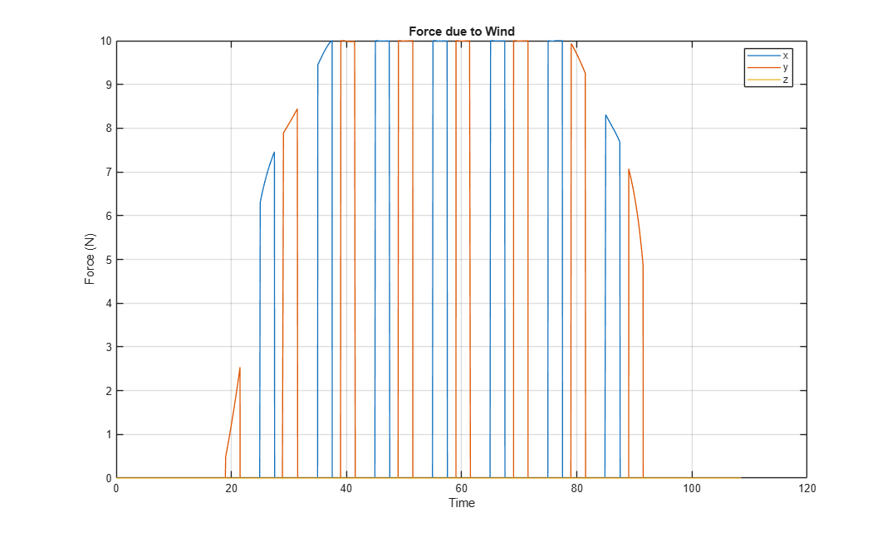
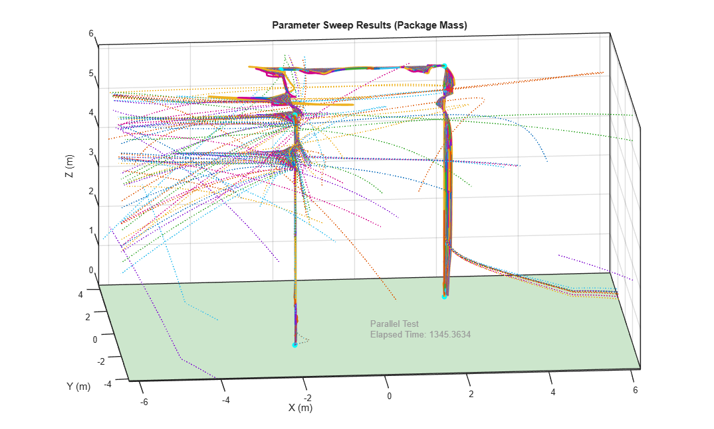
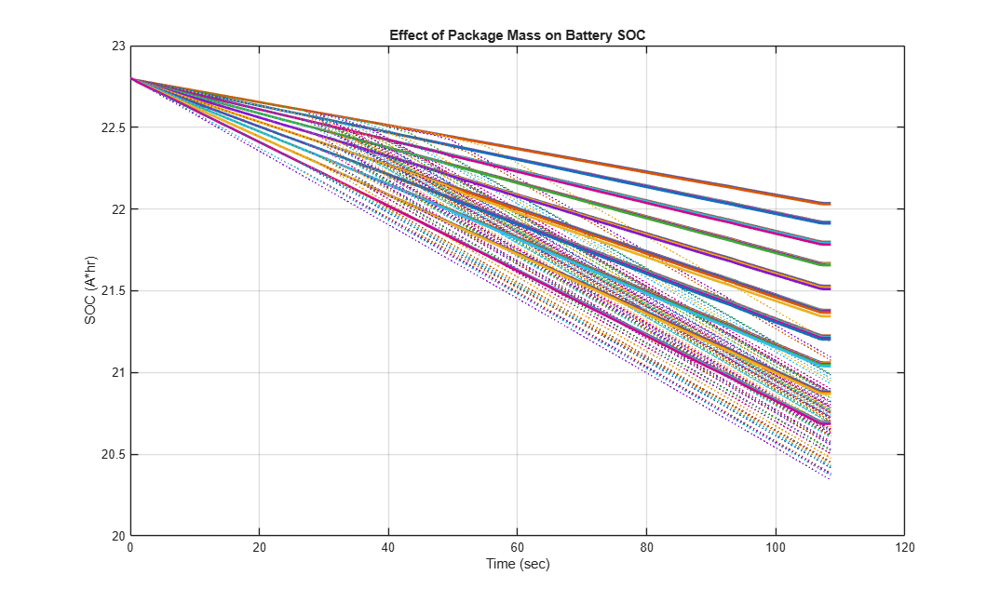
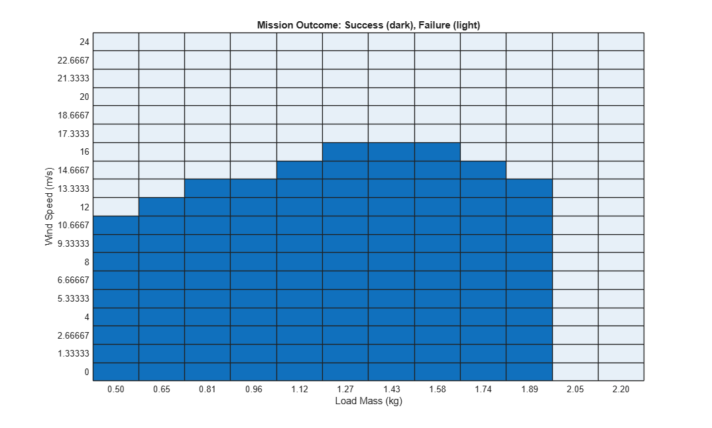
Parameter Sweep: Mass and Air Temperature
Using parallel computing we vary the mass of the package and the temperature of the air with associated change in air density
Elapsed Simulation Time Single Run: 25.9174 [25-Apr-2026 00:31:51] Checking for availability of parallel pool... Starting parallel pool (parpool) using the 'Processes' profile ... Connected to parallel pool with 4 workers. [25-Apr-2026 00:32:05] Starting Simulink on parallel workers... [25-Apr-2026 00:32:08] Configuring simulation cache folder on parallel workers... [25-Apr-2026 00:32:08] Transferring base workspace variables used in the model to parallel workers... [25-Apr-2026 00:32:08] Total size of base workspace variables to send to parallel workers is 7.74 MB. [25-Apr-2026 00:32:09] Loading model on parallel workers... [25-Apr-2026 00:32:23] Running simulations... [25-Apr-2026 00:33:15] Completed 1 of 108 simulation runs [25-Apr-2026 00:33:15] Received simulation output (size: 9.77 MB) for run 2 from parallel worker. [25-Apr-2026 00:33:15] Completed 2 of 108 simulation runs [25-Apr-2026 00:33:15] Received simulation output (size: 9.72 MB) for run 1 from parallel worker. [25-Apr-2026 00:33:15] Completed 3 of 108 simulation runs [25-Apr-2026 00:33:15] Received simulation output (size: 9.83 MB) for run 4 from parallel worker. [25-Apr-2026 00:33:15] Completed 4 of 108 simulation runs [25-Apr-2026 00:33:15] Received simulation output (size: 9.79 MB) for run 3 from parallel worker. [25-Apr-2026 00:33:26] Completed 5 of 108 simulation runs [25-Apr-2026 00:33:26] Received simulation output (size: 9.73 MB) for run 8 from parallel worker. [25-Apr-2026 00:33:26] Completed 6 of 108 simulation runs [25-Apr-2026 00:33:26] Received simulation output (size: 9.81 MB) for run 6 from parallel worker. [25-Apr-2026 00:33:26] Completed 7 of 108 simulation runs [25-Apr-2026 00:33:26] Received simulation output (size: 9.77 MB) for run 5 from parallel worker. [25-Apr-2026 00:33:26] Completed 8 of 108 simulation runs [25-Apr-2026 00:33:26] Received simulation output (size: 9.81 MB) for run 7 from parallel worker. [25-Apr-2026 00:33:38] Completed 9 of 108 simulation runs [25-Apr-2026 00:33:38] Received simulation output (size: 9.80 MB) for run 9 from parallel worker. [25-Apr-2026 00:33:40] Completed 10 of 108 simulation runs [25-Apr-2026 00:33:40] Received simulation output (size: 9.82 MB) for run 11 from parallel worker. [25-Apr-2026 00:33:40] Completed 11 of 108 simulation runs [25-Apr-2026 00:33:40] Received simulation output (size: 9.86 MB) for run 12 from parallel worker. [25-Apr-2026 00:33:40] Completed 12 of 108 simulation runs [25-Apr-2026 00:33:40] Received simulation output (size: 9.79 MB) for run 10 from parallel worker. [25-Apr-2026 00:33:52] Completed 13 of 108 simulation runs [25-Apr-2026 00:33:52] Received simulation output (size: 9.87 MB) for run 13 from parallel worker. [25-Apr-2026 00:33:54] Completed 14 of 108 simulation runs [25-Apr-2026 00:33:54] Received simulation output (size: 9.84 MB) for run 15 from parallel worker. [25-Apr-2026 00:33:54] Completed 15 of 108 simulation runs [25-Apr-2026 00:33:54] Received simulation output (size: 9.84 MB) for run 16 from parallel worker. [25-Apr-2026 00:33:55] Completed 16 of 108 simulation runs [25-Apr-2026 00:33:55] Received simulation output (size: 9.81 MB) for run 14 from parallel worker. [25-Apr-2026 00:34:06] Completed 17 of 108 simulation runs [25-Apr-2026 00:34:06] Received simulation output (size: 9.82 MB) for run 17 from parallel worker. [25-Apr-2026 00:34:08] Completed 18 of 108 simulation runs [25-Apr-2026 00:34:08] Received simulation output (size: 9.72 MB) for run 19 from parallel worker. [25-Apr-2026 00:34:08] Completed 19 of 108 simulation runs [25-Apr-2026 00:34:08] Received simulation output (size: 9.77 MB) for run 20 from parallel worker. [25-Apr-2026 00:34:08] Completed 20 of 108 simulation runs [25-Apr-2026 00:34:08] Received simulation output (size: 9.85 MB) for run 18 from parallel worker. [25-Apr-2026 00:34:20] Completed 21 of 108 simulation runs [25-Apr-2026 00:34:20] Received simulation output (size: 9.75 MB) for run 21 from parallel worker. [25-Apr-2026 00:34:21] Completed 22 of 108 simulation runs [25-Apr-2026 00:34:21] Received simulation output (size: 9.81 MB) for run 22 from parallel worker. [25-Apr-2026 00:34:22] Completed 23 of 108 simulation runs [25-Apr-2026 00:34:22] Received simulation output (size: 9.81 MB) for run 23 from parallel worker. [25-Apr-2026 00:34:22] Completed 24 of 108 simulation runs [25-Apr-2026 00:34:22] Received simulation output (size: 9.74 MB) for run 24 from parallel worker. [25-Apr-2026 00:34:33] Completed 25 of 108 simulation runs [25-Apr-2026 00:34:33] Received simulation output (size: 9.74 MB) for run 25 from parallel worker. [25-Apr-2026 00:34:34] Completed 26 of 108 simulation runs [25-Apr-2026 00:34:34] Received simulation output (size: 9.70 MB) for run 26 from parallel worker. [25-Apr-2026 00:34:34] Completed 27 of 108 simulation runs [25-Apr-2026 00:34:34] Received simulation output (size: 9.73 MB) for run 27 from parallel worker. [25-Apr-2026 00:34:46] Completed 28 of 108 simulation runs [25-Apr-2026 00:34:46] Received simulation output (size: 13.39 MB) for run 28 from parallel worker. [25-Apr-2026 00:34:56] Completed 29 of 108 simulation runs [25-Apr-2026 00:34:56] Received simulation output (size: 13.11 MB) for run 29 from parallel worker. [25-Apr-2026 00:34:58] Completed 30 of 108 simulation runs [25-Apr-2026 00:34:58] Received simulation output (size: 13.13 MB) for run 31 from parallel worker. [25-Apr-2026 00:34:58] Completed 31 of 108 simulation runs [25-Apr-2026 00:34:58] Received simulation output (size: 13.56 MB) for run 30 from parallel worker. [25-Apr-2026 00:35:11] Completed 32 of 108 simulation runs [25-Apr-2026 00:35:11] Received simulation output (size: 12.77 MB) for run 32 from parallel worker. [25-Apr-2026 00:35:23] Completed 33 of 108 simulation runs [25-Apr-2026 00:35:23] Received simulation output (size: 13.93 MB) for run 33 from parallel worker. [25-Apr-2026 00:35:24] Completed 34 of 108 simulation runs [25-Apr-2026 00:35:24] Received simulation output (size: 13.55 MB) for run 35 from parallel worker. [25-Apr-2026 00:35:25] Completed 35 of 108 simulation runs [25-Apr-2026 00:35:25] Received simulation output (size: 14.49 MB) for run 34 from parallel worker. [25-Apr-2026 00:35:36] Completed 36 of 108 simulation runs [25-Apr-2026 00:35:36] Received simulation output (size: 13.94 MB) for run 36 from parallel worker. [25-Apr-2026 00:35:38] Completed 37 of 108 simulation runs [25-Apr-2026 00:35:39] Received simulation output (size: 9.80 MB) for run 37 from parallel worker. [25-Apr-2026 00:35:40] Completed 38 of 108 simulation runs [25-Apr-2026 00:35:40] Received simulation output (size: 9.81 MB) for run 38 from parallel worker. [25-Apr-2026 00:35:40] Completed 39 of 108 simulation runs [25-Apr-2026 00:35:40] Received simulation output (size: 9.78 MB) for run 39 from parallel worker. [25-Apr-2026 00:35:52] Completed 40 of 108 simulation runs [25-Apr-2026 00:35:52] Received simulation output (size: 9.81 MB) for run 40 from parallel worker. [25-Apr-2026 00:35:55] Completed 41 of 108 simulation runs [25-Apr-2026 00:35:55] Received simulation output (size: 9.78 MB) for run 41 from parallel worker. [25-Apr-2026 00:35:56] Completed 42 of 108 simulation runs [25-Apr-2026 00:35:56] Received simulation output (size: 9.86 MB) for run 42 from parallel worker. [25-Apr-2026 00:35:56] Completed 43 of 108 simulation runs [25-Apr-2026 00:35:56] Received simulation output (size: 9.83 MB) for run 43 from parallel worker. [25-Apr-2026 00:36:08] Completed 44 of 108 simulation runs [25-Apr-2026 00:36:08] Received simulation output (size: 9.88 MB) for run 44 from parallel worker. [25-Apr-2026 00:36:11] Completed 45 of 108 simulation runs [25-Apr-2026 00:36:11] Received simulation output (size: 9.90 MB) for run 45 from parallel worker. [25-Apr-2026 00:36:13] Completed 46 of 108 simulation runs [25-Apr-2026 00:36:13] Received simulation output (size: 9.84 MB) for run 46 from parallel worker. [25-Apr-2026 00:36:14] Completed 47 of 108 simulation runs [25-Apr-2026 00:36:14] Received simulation output (size: 9.92 MB) for run 47 from parallel worker. [25-Apr-2026 00:36:24] Completed 48 of 108 simulation runs [25-Apr-2026 00:36:24] Received simulation output (size: 10.00 MB) for run 48 from parallel worker. [25-Apr-2026 00:36:27] Completed 49 of 108 simulation runs [25-Apr-2026 00:36:27] Received simulation output (size: 9.89 MB) for run 49 from parallel worker. [25-Apr-2026 00:36:31] Completed 50 of 108 simulation runs [25-Apr-2026 00:36:31] Received simulation output (size: 9.90 MB) for run 50 from parallel worker. [25-Apr-2026 00:36:31] Completed 51 of 108 simulation runs [25-Apr-2026 00:36:31] Received simulation output (size: 9.87 MB) for run 51 from parallel worker. [25-Apr-2026 00:36:41] Completed 52 of 108 simulation runs [25-Apr-2026 00:36:41] Received simulation output (size: 9.88 MB) for run 52 from parallel worker. [25-Apr-2026 00:36:41] Completed 53 of 108 simulation runs [25-Apr-2026 00:36:41] Received simulation output (size: 9.86 MB) for run 53 from parallel worker. [25-Apr-2026 00:36:47] Completed 54 of 108 simulation runs [25-Apr-2026 00:36:47] Received simulation output (size: 9.85 MB) for run 55 from parallel worker. [25-Apr-2026 00:36:48] Completed 55 of 108 simulation runs [25-Apr-2026 00:36:48] Received simulation output (size: 9.92 MB) for run 54 from parallel worker. [25-Apr-2026 00:36:57] Completed 56 of 108 simulation runs [25-Apr-2026 00:36:57] Received simulation output (size: 9.83 MB) for run 56 from parallel worker. [25-Apr-2026 00:36:57] Completed 57 of 108 simulation runs [25-Apr-2026 00:36:57] Received simulation output (size: 9.90 MB) for run 57 from parallel worker. [25-Apr-2026 00:37:02] Completed 58 of 108 simulation runs [25-Apr-2026 00:37:02] Received simulation output (size: 9.83 MB) for run 58 from parallel worker. [25-Apr-2026 00:37:03] Completed 59 of 108 simulation runs [25-Apr-2026 00:37:03] Received simulation output (size: 9.87 MB) for run 59 from parallel worker. [25-Apr-2026 00:37:13] Completed 60 of 108 simulation runs [25-Apr-2026 00:37:13] Received simulation output (size: 9.88 MB) for run 60 from parallel worker. [25-Apr-2026 00:37:14] Completed 61 of 108 simulation runs [25-Apr-2026 00:37:14] Received simulation output (size: 10.00 MB) for run 61 from parallel worker. [25-Apr-2026 00:37:18] Completed 62 of 108 simulation runs [25-Apr-2026 00:37:18] Received simulation output (size: 9.87 MB) for run 62 from parallel worker. [25-Apr-2026 00:37:20] Completed 63 of 108 simulation runs [25-Apr-2026 00:37:20] Received simulation output (size: 9.98 MB) for run 63 from parallel worker. [25-Apr-2026 00:37:26] Completed 64 of 108 simulation runs [25-Apr-2026 00:37:26] Received simulation output (size: 9.86 MB) for run 64 from parallel worker. [25-Apr-2026 00:37:28] Completed 65 of 108 simulation runs [25-Apr-2026 00:37:28] Received simulation output (size: 9.81 MB) for run 65 from parallel worker. [25-Apr-2026 00:37:31] Completed 66 of 108 simulation runs [25-Apr-2026 00:37:31] Received simulation output (size: 9.85 MB) for run 66 from parallel worker. [25-Apr-2026 00:37:33] Completed 67 of 108 simulation runs [25-Apr-2026 00:37:33] Received simulation output (size: 9.91 MB) for run 67 from parallel worker. [25-Apr-2026 00:37:40] Completed 68 of 108 simulation runs [25-Apr-2026 00:37:41] Received simulation output (size: 9.92 MB) for run 68 from parallel worker. [25-Apr-2026 00:37:41] Completed 69 of 108 simulation runs [25-Apr-2026 00:37:41] Received simulation output (size: 9.92 MB) for run 69 from parallel worker. [25-Apr-2026 00:37:46] Completed 70 of 108 simulation runs [25-Apr-2026 00:37:46] Received simulation output (size: 9.86 MB) for run 70 from parallel worker. [25-Apr-2026 00:37:48] Completed 71 of 108 simulation runs [25-Apr-2026 00:37:48] Received simulation output (size: 9.91 MB) for run 71 from parallel worker. [25-Apr-2026 00:37:55] Completed 72 of 108 simulation runs [25-Apr-2026 00:37:55] Received simulation output (size: 9.93 MB) for run 72 from parallel worker. [25-Apr-2026 00:37:55] Completed 73 of 108 simulation runs [25-Apr-2026 00:37:55] Received simulation output (size: 10.03 MB) for run 73 from parallel worker. [25-Apr-2026 00:38:00] Completed 74 of 108 simulation runs [25-Apr-2026 00:38:00] Received simulation output (size: 9.83 MB) for run 74 from parallel worker. [25-Apr-2026 00:38:02] Completed 75 of 108 simulation runs [25-Apr-2026 00:38:02] Received simulation output (size: 9.95 MB) for run 75 from parallel worker. [25-Apr-2026 00:38:08] Completed 76 of 108 simulation runs [25-Apr-2026 00:38:08] Received simulation output (size: 9.91 MB) for run 76 from parallel worker. [25-Apr-2026 00:38:09] Completed 77 of 108 simulation runs [25-Apr-2026 00:38:09] Received simulation output (size: 9.81 MB) for run 77 from parallel worker. [25-Apr-2026 00:38:14] Completed 78 of 108 simulation runs [25-Apr-2026 00:38:14] Received simulation output (size: 9.88 MB) for run 78 from parallel worker. [25-Apr-2026 00:38:16] Completed 79 of 108 simulation runs [25-Apr-2026 00:38:16] Received simulation output (size: 9.80 MB) for run 79 from parallel worker. [25-Apr-2026 00:38:22] Completed 80 of 108 simulation runs [25-Apr-2026 00:38:22] Received simulation output (size: 9.90 MB) for run 80 from parallel worker. [25-Apr-2026 00:38:23] Completed 81 of 108 simulation runs [25-Apr-2026 00:38:23] Received simulation output (size: 9.86 MB) for run 81 from parallel worker. [25-Apr-2026 00:38:28] Completed 82 of 108 simulation runs [25-Apr-2026 00:38:28] Received simulation output (size: 10.15 MB) for run 82 from parallel worker. [25-Apr-2026 00:38:29] Completed 83 of 108 simulation runs [25-Apr-2026 00:38:29] Received simulation output (size: 10.12 MB) for run 83 from parallel worker. [25-Apr-2026 00:38:36] Completed 84 of 108 simulation runs [25-Apr-2026 00:38:36] Received simulation output (size: 10.17 MB) for run 84 from parallel worker. [25-Apr-2026 00:38:36] Completed 85 of 108 simulation runs [25-Apr-2026 00:38:36] Received simulation output (size: 10.22 MB) for run 85 from parallel worker. [25-Apr-2026 00:38:41] Completed 86 of 108 simulation runs [25-Apr-2026 00:38:41] Received simulation output (size: 10.17 MB) for run 86 from parallel worker. [25-Apr-2026 00:38:42] Completed 87 of 108 simulation runs [25-Apr-2026 00:38:42] Received simulation output (size: 10.10 MB) for run 87 from parallel worker. [25-Apr-2026 00:38:49] Completed 88 of 108 simulation runs [25-Apr-2026 00:38:49] Received simulation output (size: 10.24 MB) for run 89 from parallel worker. [25-Apr-2026 00:38:49] Completed 89 of 108 simulation runs [25-Apr-2026 00:38:49] Received simulation output (size: 10.09 MB) for run 88 from parallel worker. [25-Apr-2026 00:38:54] Completed 90 of 108 simulation runs [25-Apr-2026 00:38:54] Received simulation output (size: 10.11 MB) for run 90 from parallel worker. [25-Apr-2026 00:38:58] Completed 91 of 108 simulation runs [25-Apr-2026 00:38:58] Received simulation output (size: 12.43 MB) for run 91 from parallel worker. [25-Apr-2026 00:39:04] Completed 92 of 108 simulation runs [25-Apr-2026 00:39:04] Received simulation output (size: 12.30 MB) for run 93 from parallel worker. [25-Apr-2026 00:39:06] Completed 93 of 108 simulation runs [25-Apr-2026 00:39:06] Received simulation output (size: 13.06 MB) for run 92 from parallel worker. [25-Apr-2026 00:39:09] Completed 94 of 108 simulation runs [25-Apr-2026 00:39:09] Received simulation output (size: 12.74 MB) for run 94 from parallel worker. [25-Apr-2026 00:39:16] Completed 95 of 108 simulation runs [25-Apr-2026 00:39:16] Received simulation output (size: 13.48 MB) for run 95 from parallel worker. [25-Apr-2026 00:39:20] Completed 96 of 108 simulation runs [25-Apr-2026 00:39:20] Received simulation output (size: 12.38 MB) for run 96 from parallel worker. [25-Apr-2026 00:39:25] Completed 97 of 108 simulation runs [25-Apr-2026 00:39:25] Received simulation output (size: 13.96 MB) for run 97 from parallel worker. [25-Apr-2026 00:39:27] Completed 98 of 108 simulation runs [25-Apr-2026 00:39:27] Received simulation output (size: 13.01 MB) for run 98 from parallel worker. [25-Apr-2026 00:39:29] Completed 99 of 108 simulation runs [25-Apr-2026 00:39:29] Received simulation output (size: 9.25 MB) for run 100 from parallel worker. [25-Apr-2026 00:39:34] Completed 100 of 108 simulation runs [25-Apr-2026 00:39:34] Received simulation output (size: 9.25 MB) for run 101 from parallel worker. [25-Apr-2026 00:39:34] Completed 101 of 108 simulation runs [25-Apr-2026 00:39:34] Received simulation output (size: 13.04 MB) for run 99 from parallel worker. [25-Apr-2026 00:39:35] Completed 102 of 108 simulation runs [25-Apr-2026 00:39:35] Received simulation output (size: 9.26 MB) for run 102 from parallel worker. [25-Apr-2026 00:39:37] Completed 103 of 108 simulation runs [25-Apr-2026 00:39:37] Received simulation output (size: 9.25 MB) for run 103 from parallel worker. [25-Apr-2026 00:39:42] Completed 104 of 108 simulation runs [25-Apr-2026 00:39:42] Received simulation output (size: 9.26 MB) for run 105 from parallel worker. [25-Apr-2026 00:39:42] Completed 105 of 108 simulation runs [25-Apr-2026 00:39:42] Received simulation output (size: 9.26 MB) for run 104 from parallel worker. [25-Apr-2026 00:39:43] Completed 106 of 108 simulation runs [25-Apr-2026 00:39:43] Received simulation output (size: 9.25 MB) for run 106 from parallel worker. [25-Apr-2026 00:39:45] Completed 107 of 108 simulation runs [25-Apr-2026 00:39:45] Received simulation output (size: 9.25 MB) for run 107 from parallel worker. [25-Apr-2026 00:39:49] Completed 108 of 108 simulation runs [25-Apr-2026 00:39:50] Received simulation output (size: 9.25 MB) for run 108 from parallel worker. [25-Apr-2026 00:39:50] Cleaning up parallel workers... Elapsed Sweep Time Total: 446.00 Elapsed Sweep Time/(Num Tests): 4.13 Parallel pool using the 'Processes' profile is shutting down.
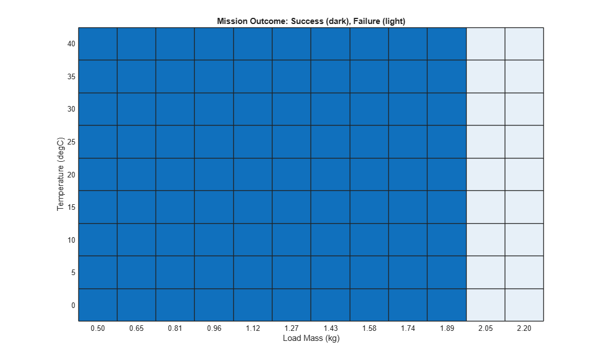
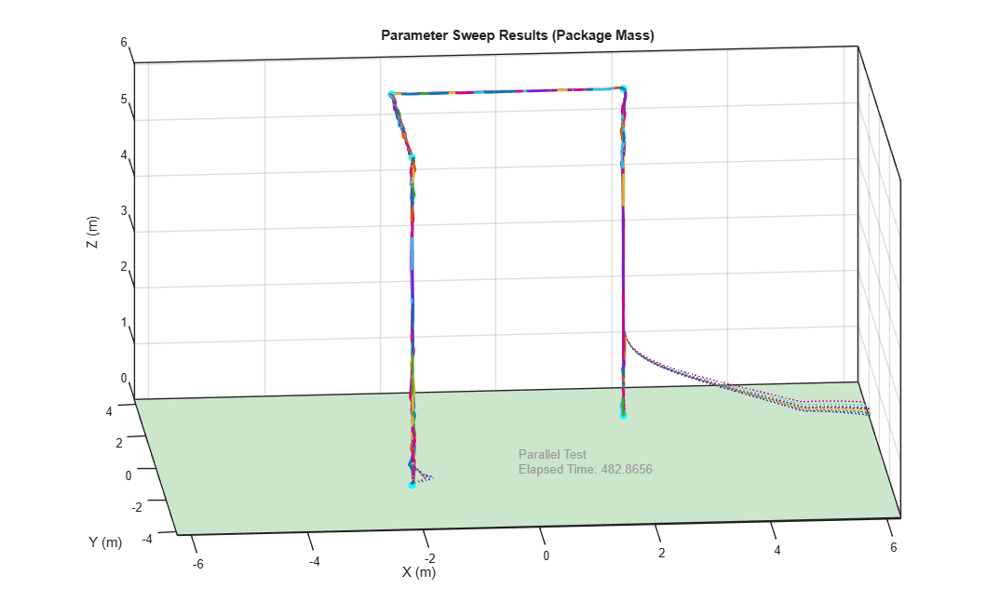
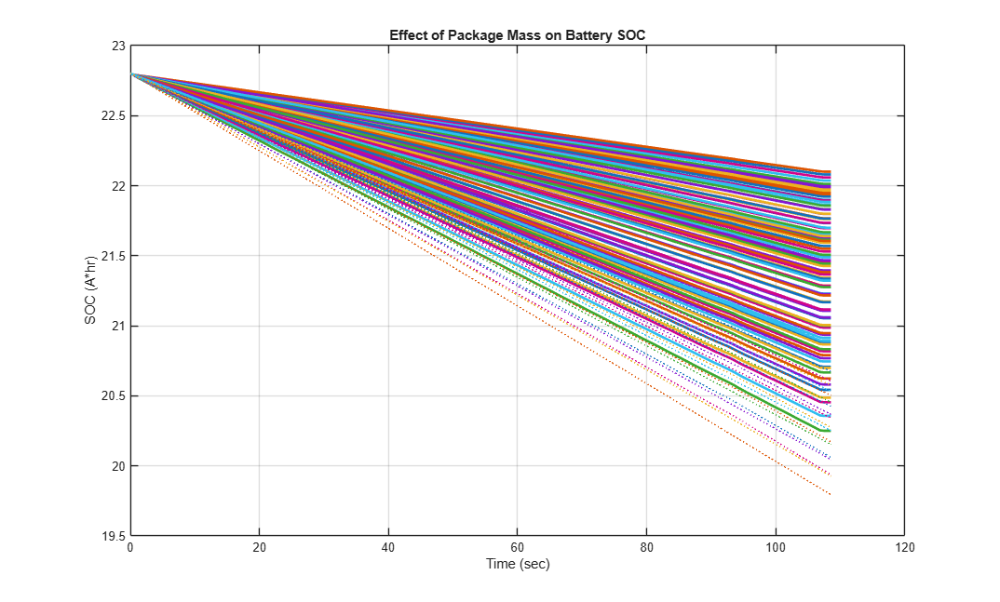